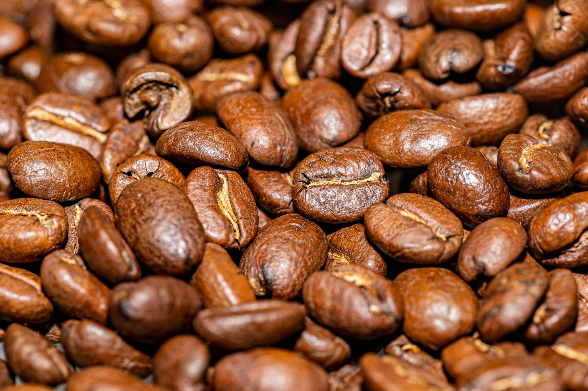
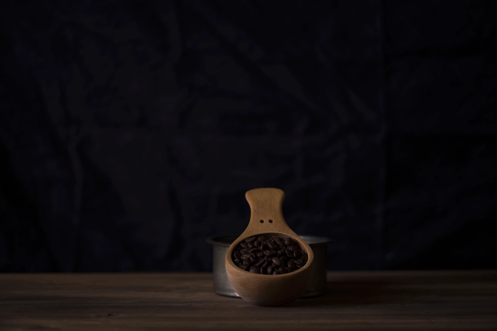
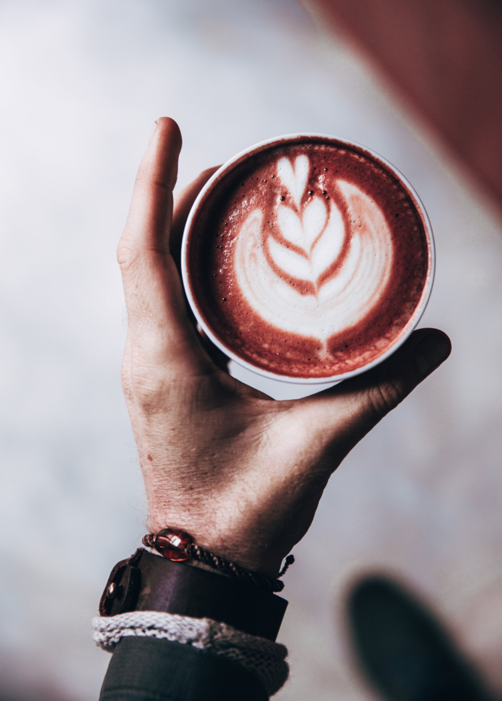

TODAY IS THE DAY
COFFEE ROASTERS
小豆島の海風とともに、一杯の自家焙煎コーヒーを。
オリーブと醤油の島で、もうひとつの香りを焙煎しています。
島で焙煎する、ということ
瀬戸内海に浮かぶ小豆島は、オリーブと醤油の香りが潮風に混じる、穏やかな島です。TODAY IS THE DAY COFFEE ROASTERSは、その同じ島の空気の中で、豆を一つひとつ焙煎しています。
海の近くで焙煎するということは、天候や湿度と毎日向き合うということでもあります。その日の空気を感じながら窯に向かう時間を、私たちは大切にしています。
焙煎度合いや仕入れ産地の詳細については、現在情報を整理しております。店頭またはお電話にてお気軽にお尋ねください。(※準備中)


豆を買う、島でくつろぐ
持ち帰ってご自宅で淹れていただく自家焙煎豆と、店内でゆっくり味わっていただくカフェメニュー。どちらも同じ焙煎から生まれています。

自家焙煎豆
島の工房で焙煎した豆を袋詰めにしてお届けします。詳しいラインナップはこちら。

カフェメニュー
ハンドドリップやエスプレッソベースの一杯を、店内の落ち着いた空間でどうぞ。
お客様の声(イメージ例)
これまでのご来店シーンを参考にしたイメージ例です
イメージ例「小豆島に来たら一度立ち寄ってみたいと思っていたお店でした。香りの良いコーヒーをいただきながら、窓の外の景色をゆっくり眺める時間は格別でした。」
観光で来店・イメージ例
イメージ例「店内も落ち着いた雰囲気で、仕事の合間に一息つくのにちょうど良い空間でした。」
地元在住・イメージ例